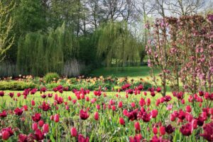

Inspirerende verhalen door Martje van den Bosch
Op verzoek verzorgen wij lezingen voor groepen, zoals afdelingen van Groei & Bloei en tuin- of vriendenclubs. Een lezing bestaat uit 2 blokken van ongeveer 45 minuten. De presentaties zijn ruimschoots voorzien van mooie afbeeldingen die in De Tuinen in Demen zijn gemaakt.
Martje van den Bosch studeerde filosofie in Nijmegen en was als docent verbonden aan Avans Hogeschool te 's-Hertogenbosch. Enige jaren geleden koos zij ervoor haar loopbaan in het onderwijs te verruilen voor haar werkzaamheden in De Tuinen in Demen. Ze plaatst haar ervaringen in de tuin in een filosofisch kader.
Elk mens beleeft kleuren anders. Wat is het effect van paarse bloemen? Hoe lijkt een tuin groter? Elke kleur brengt zijn eigen sfeer en indruk met zich mee.
Welke aspecten spelen een rol bij harmonie in de tuin? Kleuren, vormen en de functies die planten kunnen vervullen. Met handige tips & tricks.
Martje breekt een lans voor planten die niet per se makkelijk zijn maar een waardevolle bijdrage leveren aan een boeiende en dynamische tuin. Over rozen, baardirissen, valse indigo en zonnehoeden.
Neem contact op via e-mail of telefoon om een lezing te boeken voor uw groep.